新素材保底与导出隔离
后续更新：本页初版雷电已停用，当前按用户指定复用全动作对照里的现成改版雷电。查看当前雷电运行效果；本页截图与验证包保留当批次记录。
角色、头像、窗口和特效加载失败时，改用本项目已有的新素材。原图目录及另存到其他目录的同像素副本，均从导出中排除。
保留当前已确认的身体动作编排和配乐／音效。没有更新iPhone，没有改写玩家存档。本页记录技术修复与检查范围，不作“已无侵权风险”的法律结论。
本次修改
| 范围 | 现在的行为 |
|---|---|
| 地图人物、据点人物 | 优先使用当前确认的新图；缺图时选择同职业的新图，再选择同阵营新图。未知普通NPC使用新村民形象。 |
| 战斗身体 | 主素材正常时保持当前演出。备用图集与主图集帧编号不兼容时，只显示备用图集自己的待机姿态，避免乱帧；原有一次命中结算仍执行一次。 |
| 头像 | 阻止回退到旧头像。诺娅暂用莉莎的新法师头像，赛琳暂用米蕾的新疗愈师头像；这是明确的同职业共用保底，尚非两人的独立新头像。 |
| 窗口、字体、光标与血条 | 复用当前新窗口材质及已使用的授权字体；光标、血条采用本项目功能图形。旧位图索引不再是运行保底。 |
| 攻击与地图特效 | 优先复用现有已确认的新特效，补绘电击与投枪。504种动作变体的3,726处特效绑定改指新素材；身体帧序、命中时刻与声音请求保持。 |
| 导出 | 两个现有导出预设排除原图目录、旧图片索引及557张同像素副本。本地原始资料仍保留，运行路径禁止将其当作缺图备用。 |
像素检查能发现直接复制、改名和不同PNG压缩方式保存的同图；不等于认定所有近似构图、描改或动作都已完成法律审查。
动作“相似”与来源依赖的区别
前次“动作仍依赖原作”的表述过宽。举剑、下劈、突刺、拉弓和受击等通用动作概念，并不会仅因多个游戏都使用而自动构成侵权。需要区分通用动作概念与某部作品中具体的画面、姿态序列和整段演出表达。美国版权局对思想／方法与具体表达作了这一原则区分。来源：美国版权局FAQ。
本项目仍有承接旧动作数据的帧序、坐标与时序信息；这是可核实的技术来源事实，不能直接换算成“动作相似即侵权”。本次没有以此为由重做所有身体动作，也没有改动已确认的动作编排。若后续判断具体演出是否属于改编，应逐条比较具有独创性的表达，不能只看角色换了形象或动作是否完全一样。我国著作权法第十三条也明确，改编作品的权利行使不得侵犯原作品著作权。来源：国家版权局《著作权法》。
配乐与音效按本次要求保持，不因“风格接近”继续重制。本轮没有重新开展音乐旋律／录音来源的法律鉴定。
实际验证范围
| 检查 | 结果及范围 |
|---|---|
| 新素材与缺图故障 | 通过22,758项断言；覆盖56个登记场景（含40个正式战场及训练／测试场景）、1,793个角色条目、1,287项不同资源。主动模拟缺图，核对可见保底与单次命中结算。 |
| 现有动作回归 | 既有535,775项检查通过，包含886条攻击选择、47个实际播放配置；其中3套进行定时播放检查。不是886场完整实玩。 |
| 运行画面 | 11张1280×960引擎截图及相应内容安全区检查通过。采用不抢焦点的后台捕获；不是iPhone真机截图。 |
| 隔离导出包 | 2,042项检查通过。在没有源码资源回退的独立目录挂载PCK，核对原图及557张副本缺席、新资源和首战正常加载。 |
本轮未进行五章完整通关、iPhone触摸试玩或设备安装；没有以断言数量代替这些检查。仅生成独立验证资源包，未声称生成Steam发行包。
运行画面
点图可查看原尺寸。全部为本次本地引擎运行截图；PNG仅作无损压缩。

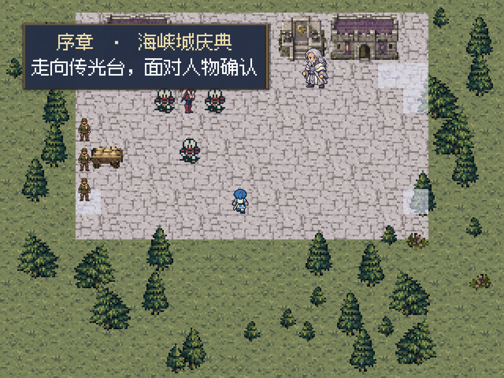

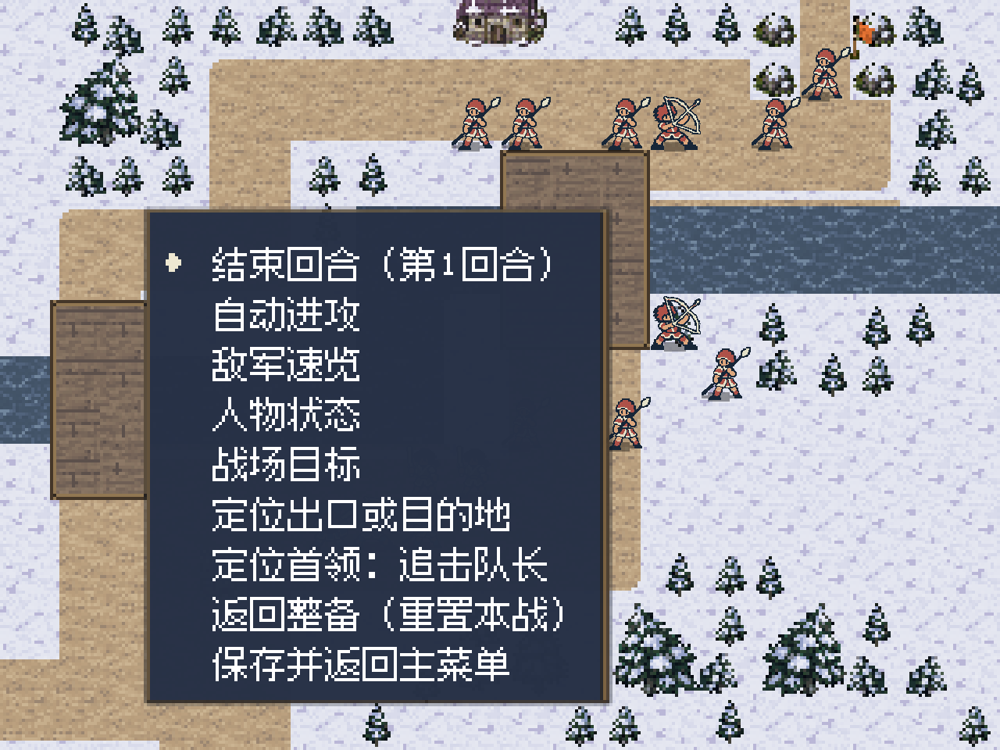

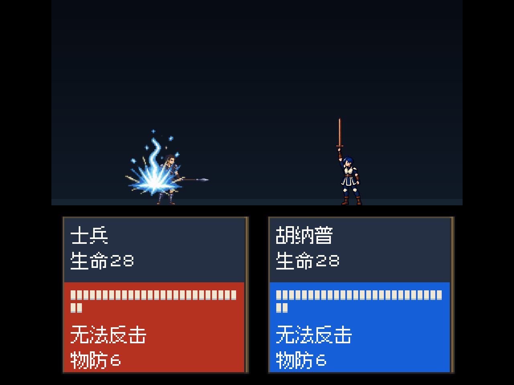

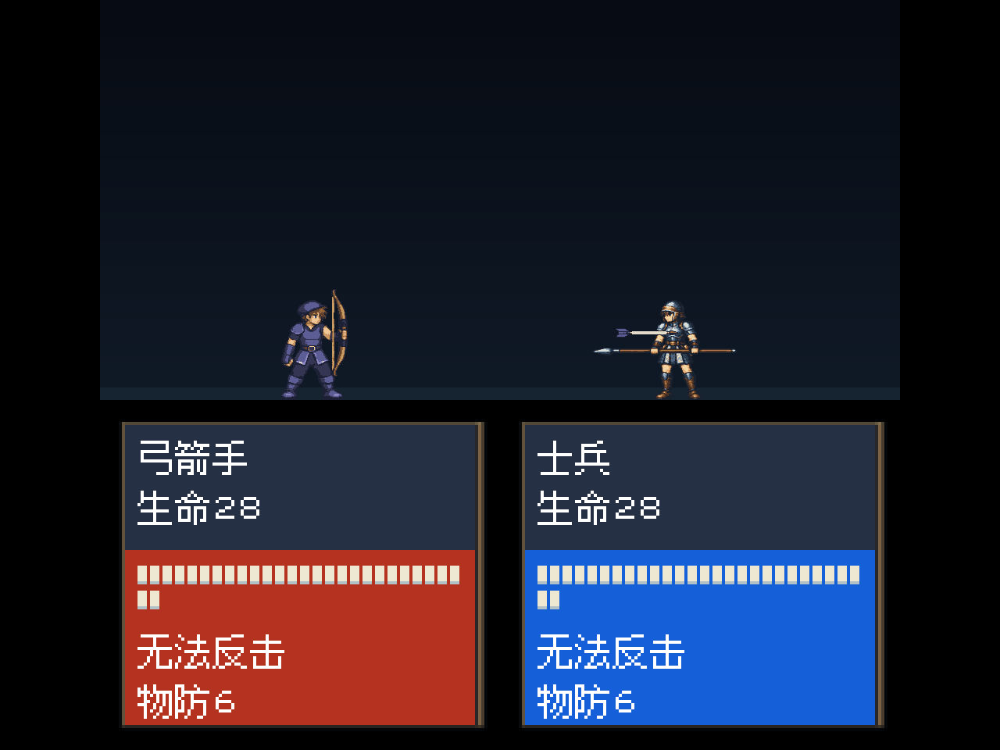

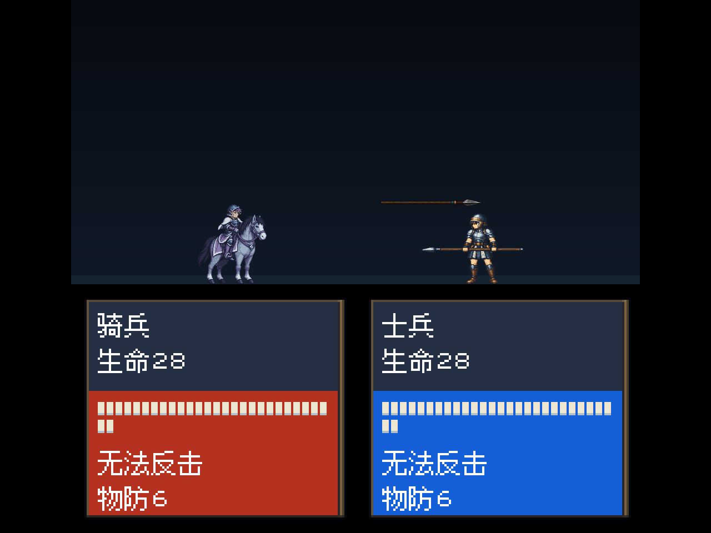

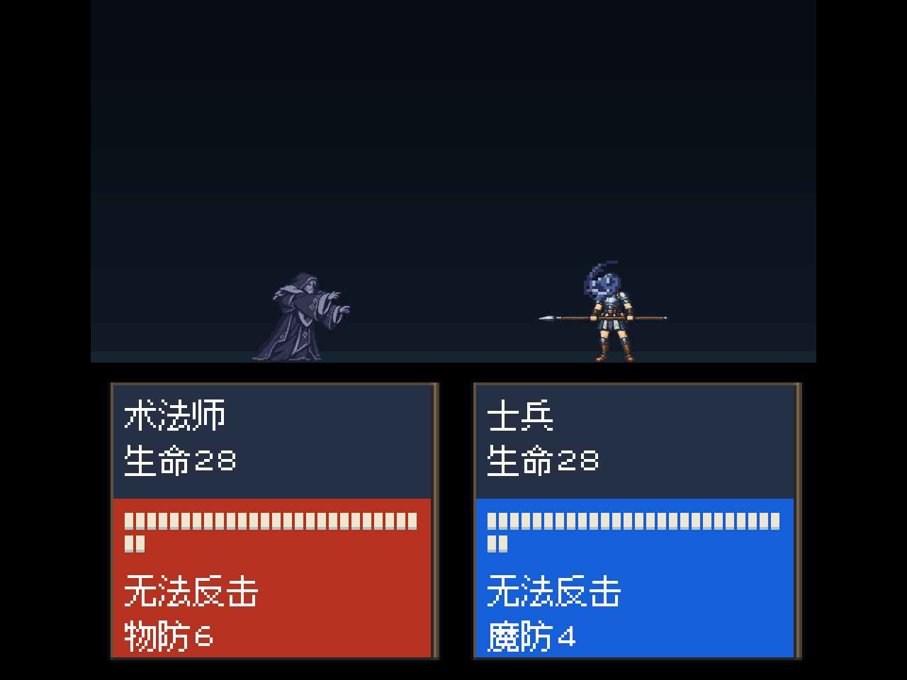

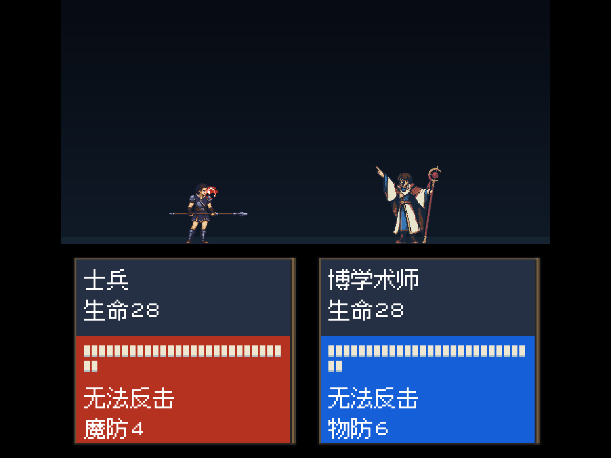

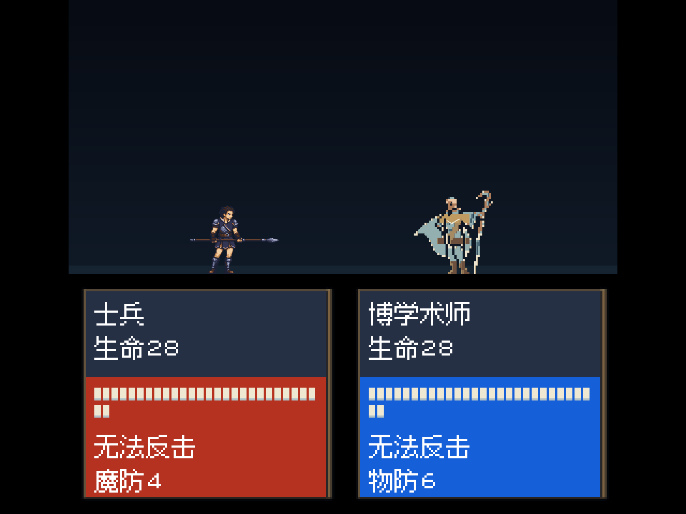

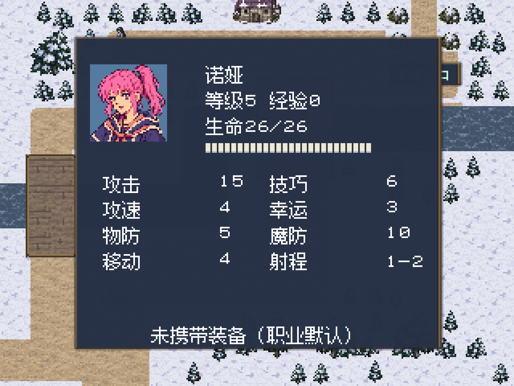

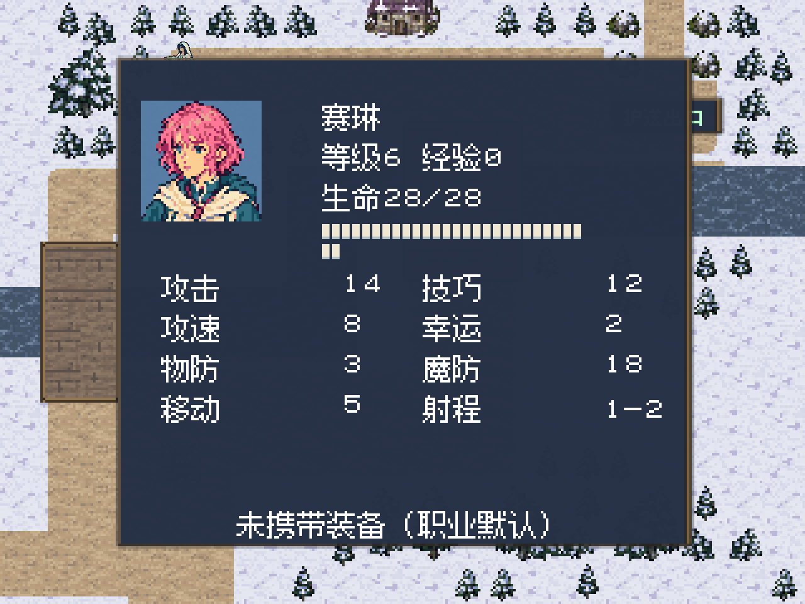

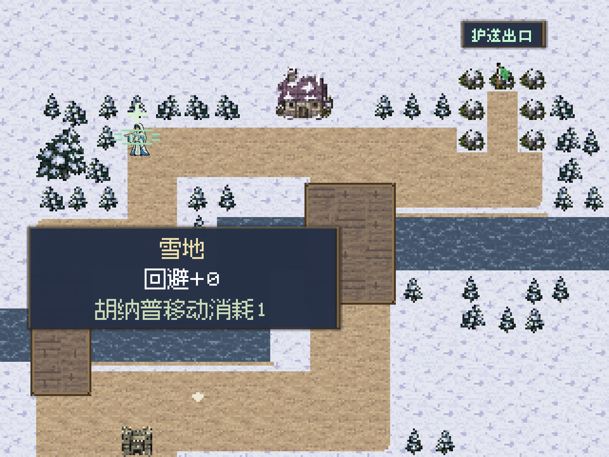